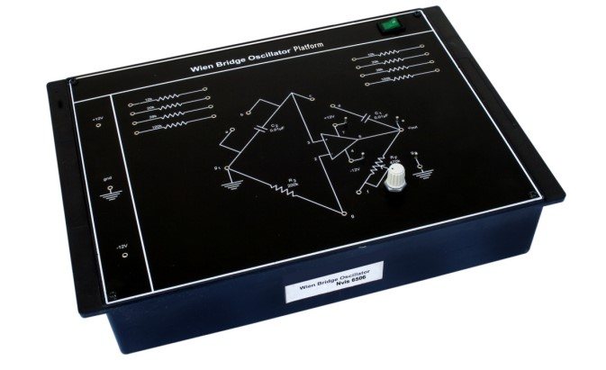

Understanding Wien Bridge
Nvis 6506

Wein Bridge Oscillator
Wein Bridge Oscillator
Nvis 6506 Understanding Wien Bridge is an elite training system for the analog electronics laboratories. It is useful in understanding the basic concepts and functioning of the oscillator and its use in generation of sinusoidal waveform. This Platform describes the complete design of the Wein Bridge Oscillator. The training system is designed in such a way that for performing any experiment students have to connect the links by patch cords so it is very helpful for students to learn step by step design of Wein Bridge Oscillator.
Features
- Exclusive and compact design
- Straight forward representation of Wein Bridge Oscillator
- +12V, -12V inbuilt SMPS provided with the trainer for power supply
- Designed with considering all the safety standards
- Online product tutorial
- Low cost trainer including illustration of Oscillator design using passive elements
Technical Specifications
- Biasing Voltage : +12V, -12V DC
- Design of Oscillators : Passive Elements with Op - Amp
- Dimensions (mm) : 240 W x 345 D x 110 H
- Weight : 1kg (aproximate)
Scope Of Learning
Study of design and functioning of Wein Bridge Oscillator
To download the manual click here